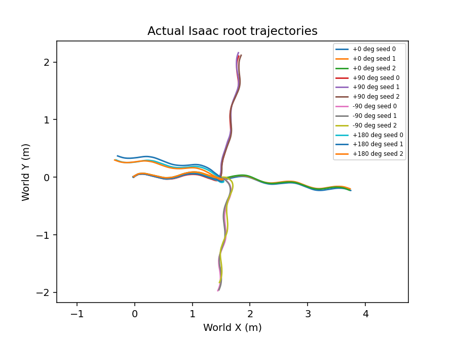

Functional quickcheck · SONIC-v1.1-PT
Direction change after an abrupt cue. Simulation physics: Isaac Lab / PhysX. These are measured states, not an animation.
Times average reached episodes only; reached N and approach-ready N remain visible. Missing values are not zero. Velocity error averages complete 1.5 s windows only. No aggregate leaderboard score is defined.
Summary CSV · Episode CSV · Provenance · Combined demo
| model | requested_speed_m_s | turn_angle_deg | N | approach_ready_N | reached_N | turn_time_s | actual_approach_speed_m_s | velocity_error_m_s | velocity_error_N | peak_tilt_deg | fall_N | error_N |
|---|---|---|---|---|---|---|---|---|---|---|---|---|
| SONIC-v1.1-PT | 1.000 | -90.000 | 3 | 3 | 3 | 0.913 | 0.898 | 0.668 | 3 | 13.072 | 0 | 0 |
| SONIC-v1.1-PT | 1.000 | 0.000 | 3 | 3 | 3 | 0.147 | 0.896 | 0.296 | 3 | 11.746 | 0 | 0 |
| SONIC-v1.1-PT | 1.000 | 90.000 | 3 | 3 | 3 | 1.307 | 0.896 | 0.500 | 3 | 10.595 | 0 | 0 |
| SONIC-v1.1-PT | 1.000 | 180.000 | 3 | 3 | 3 | 1.347 | 0.895 | 0.832 | 3 | 15.659 | 0 | 0 |

v1_turn+0_seed0
v1_turn+180_seed0
v1_turn+90_seed0
v1_turn-90_seed0
Videos support human qualitative review; no automatic qualitative score is claimed. Representative seed is fixed in the profile.